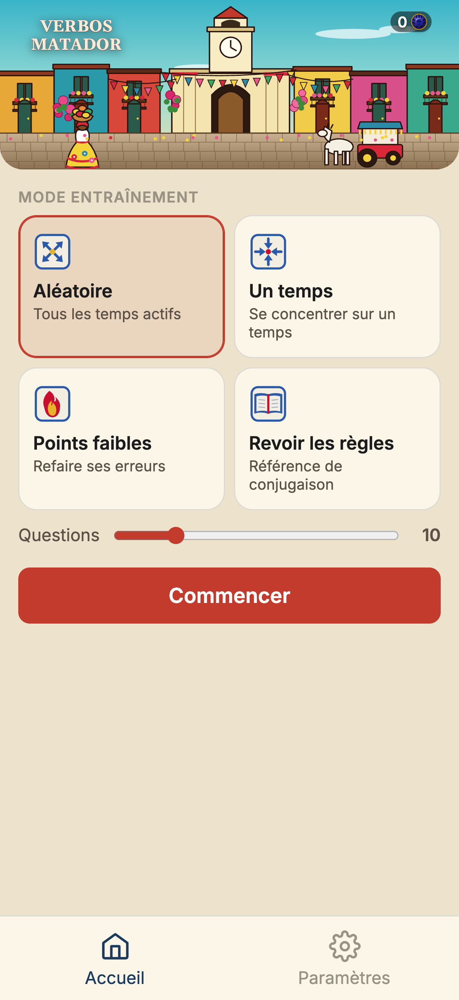
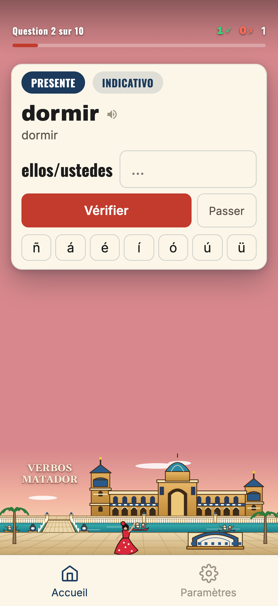
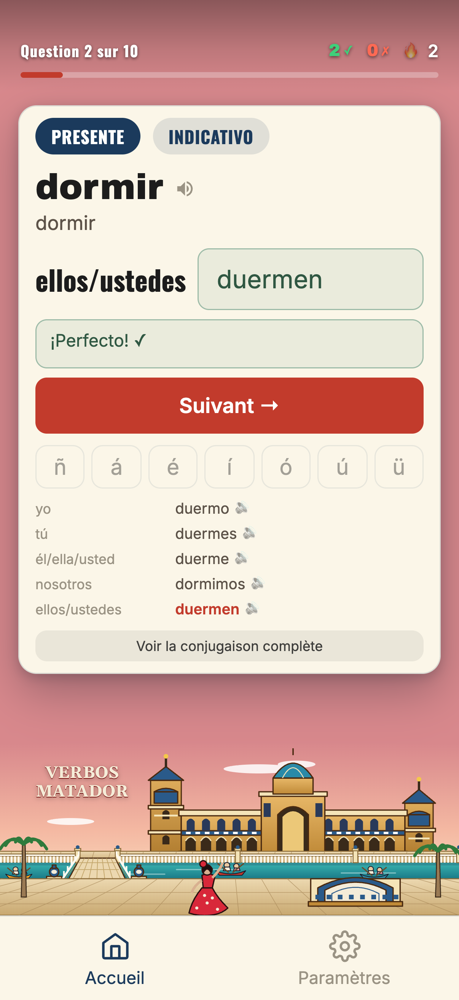
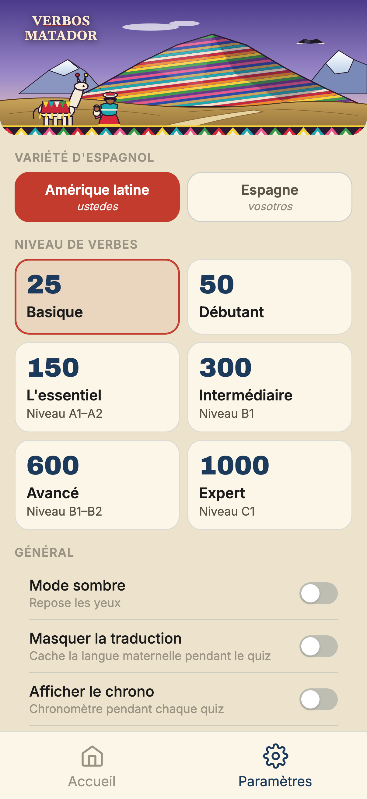
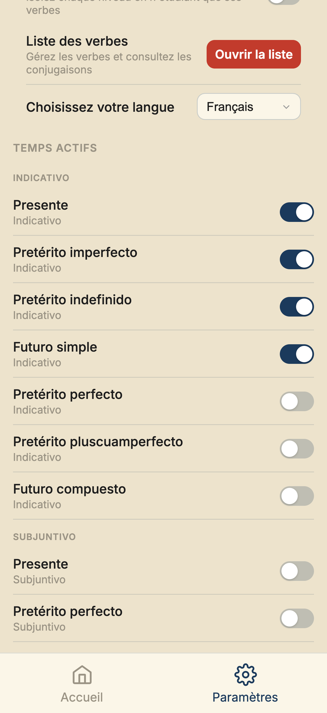
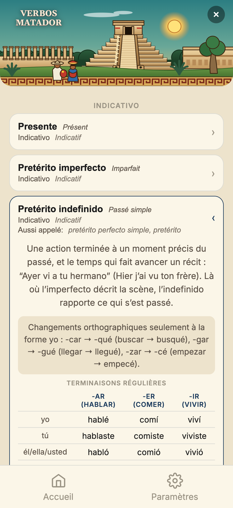
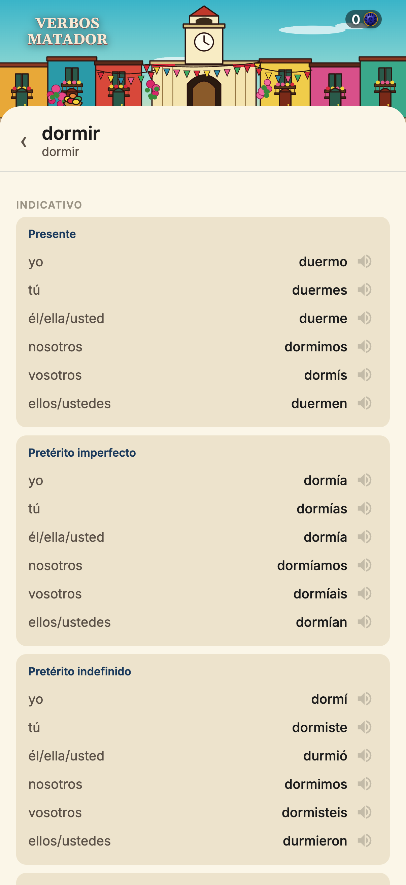
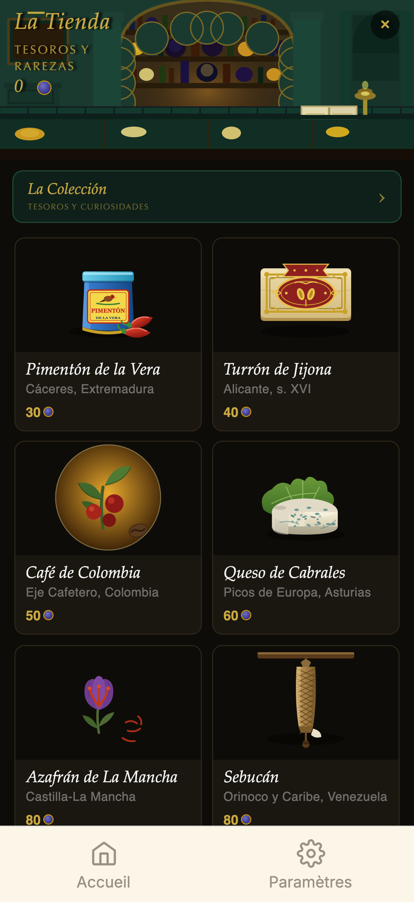

Verbos Matador
Entraîneur de conjugaison des verbes espagnols de Tuffyred LLC


Un aperçu de l’application








Cette traduction est fournie uniquement pour votre confort. En cas de divergence, la version anglaise prévaut et constitue le texte juridiquement contraignant. Lire la version anglaise →
Aperçu
Cette application se concentre sur les aspects les plus difficiles de l'apprentissage de l'espagnol : maîtriser la conjugaison des verbes. À force de répétition et d'un peu de corruption, Verbos Matador vous donne un outil pour vous entraîner aux conjugaisons dans de courts quiz, et transforme cette corvée en un exercice rapide et satisfaisant que vous aurez vraiment envie d'ouvrir.
- Entraînez-vous exactement sur ce qu'il vous faut. Choisissez sur lesquels des 19 temps et modes travailler, du presente de tous les jours aux plus redoutables subjuntivo et condicional, ou concentrez-vous sur un seul à la fois.
- Attaquez vos points faibles. Un mode Points faibles dédié retient exactement les verbes et les temps que vous ratez et les travaille jusqu'à ce qu'ils soient acquis.
- Masquez la traduction. Cachez le sens et entraînez compréhension et conjugaison en même temps.
- Écoutez-le prononcé. Prononciation pour chaque conjugaison sur les appareils dotés de la synthèse vocale.
- Collectionnez en apprenant. Gagnez des points pour les bonnes réponses et dépensez-les dans La Tienda pour 41 trésors de tout le monde hispanophone, chacun avec sa propre photo et son histoire. La boutique fonctionne avec les points que vous gagnez, jamais avec de l'argent réel.
- Des ressources de référence complètes : une description de chaque temps, son usage et ses terminaisons régulières, ainsi qu'un tableau de conjugaison complet pour n'importe quel verbe à tous les temps.
ENCORE PLUS À AIMER
- Niveaux par fréquence (de A1 à C1) : apprenez d'abord les verbes les plus utiles, jusqu'à 1 000.
- Six langues d'interface : English, Español, Français, Deutsch, Português, Italiano.
- Une rangée de touches met le ñ et les voyelles accentuées à portée de doigt, et les réponses sont acceptées avec ou sans accents.
- Amérique latine ou Espagne : un interrupteur ajoute ou masque le vosotros, et quelques mots qui diffèrent entre les deux sont pris en charge.
- Séries (streaks), un minuteur optionnel et une durée de session réglable.
- Composez votre propre liste de verbes : excluez ce que vous maîtrisez déjà.
- 100% hors ligne. Aucun compte, aucune inscription, aucun suivi, aucune publicité.
Payez une seule fois. Chaque niveau et chaque temps est accessible dès le premier lancement, sans abonnement et sans achats intégrés.
Buena suerte. Ces verbes n'ont aucune chance.
Des questions, des commentaires ou des problèmes avec l’application ? Nous serions ravis d’avoir de vos nouvelles.
Écrivez-nous à contact@tuffyred.com
Politique de confidentialité
Dernière mise à jour : 5 octobre 2026Tuffyred LLC (“nous” ou “notre”) exploite l’application mobile Verbos Matador (l’“application”). La présente politique explique quelles informations nous recueillons et comment nous les utilisons.
Informations que nous recueillons
Verbos Matador ne recueille, ne stocke ni ne transmet aucune information personnelle. Toute la progression des quiz, les réglages et les préférences sont stockés localement sur votre appareil et ne sont jamais envoyés à nos serveurs ni à des tiers.
Achats
Verbos Matador est une application payante avec un achat unique. Elle ne contient aucun achat intégré ni publicité. Votre achat est traité entièrement par Apple (App Store) ou Google (Google Play) ; Tuffyred LLC ne reçoit ni ne conserve vos informations de paiement. Veuillez consulter les politiques de confidentialité d’Apple ou de Google pour savoir comment elles traitent les données d’achat.
Confidentialité des enfants
Verbos Matador ne recueille sciemment aucune information personnelle de quiconque, y compris des enfants de moins de 13 ans. L’application ne contient aucune publicité ni inscription de compte.
Modifications de la présente politique
Nous pouvons mettre à jour la présente politique de temps à autre. Toute modification sera publiée sur cette page avec une date mise à jour. L’utilisation continue de l’application après des modifications vaut acceptation de la politique révisée.
Contact
Si vous avez des questions concernant la présente politique, contactez-nous à contact@tuffyred.com
Conditions d’utilisation
Dernière mise à jour : 5 octobre 2026Veuillez lire attentivement les présentes conditions d’utilisation (“Conditions”) avant d’utiliser l’application Verbos Matador exploitée par Tuffyred LLC (“nous” ou “notre”).
Utilisation de l’application
Verbos Matador est fournie pour un usage personnel, éducatif et non commercial. Vous ne pouvez pas copier, modifier, distribuer ni pratiquer l’ingénierie inverse sur une quelconque partie de l’application.
Achats
Verbos Matador est un achat unique payant et ne propose aucun achat intégré. Toutes les ventes sont définitives, sauf disposition contraire de la loi applicable. Les achats sont gérés via l’App Store d’Apple ou le Google Play Store, et leurs politiques de remboursement s’appliquent.
Exclusion de garanties
L’application est fournie “telle quelle”, sans garantie d’aucune sorte. Nous ne garantissons pas que l’application sera exempte d’erreurs ou ininterrompue. Le contenu éducatif (conjugaisons de verbes, traductions) est fourni à des fins d’apprentissage et peut contenir des inexactitudes.
Limitation de responsabilité
Dans toute la mesure permise par la loi, Tuffyred LLC ne saurait être tenue responsable de tout dommage indirect, accessoire ou consécutif découlant de votre utilisation de l’application.
Droit applicable
Les présentes Conditions sont régies par les lois des États-Unis. Tout litige sera résolu dans la juridiction où Tuffyred LLC exerce ses activités.
Modifications des présentes Conditions
Nous nous réservons le droit de modifier les présentes Conditions à tout moment. L’utilisation continue de l’application après des modifications vaut acceptation des Conditions révisées.
Contact
Pour toute question concernant les présentes Conditions, contactez-nous à contact@tuffyred.com